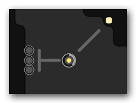

Screeps 是什么样的游戏
Screeps 是一款 MMORTS （大型多人在线即时战略游戏）。游戏里有很多世界，每一个玩家都可以在包含所有玩家的单个世界中创建自己的领地。在领地上可以采集资源，建造单位以及占领领土。随着你征服的领土越来越多，势力范围越来越大，你在游戏世界中的影响力也越来越大。不过荣耀与风险并存，你的领地也同时被虎视眈眈的其他玩家盯着。
Screeps 主要是为了有编程背景的人设计的。和其他 RTS 游戏不同的地方在于，只要你为你的 Creep 敲好了代码，就可以让它们自动运行，不用你亲自操作。同时和其他 MMO 游戏不同之处在于你不用花费成片成片的时间去玩，只用没事的时候抽空看一看一切是否进展顺利。
游戏世界
Screeps 的游戏世界由很多相互连接的房间（room）组成。每个房间是一个 50x50 封闭空间，可能有 1～4 个出口通向其他的房间。世界被分为不同的镜面（shard），并通过之间的传送门相连。你可以把镜面视为整个世界的 z 轴。
每个房间的布局是独一无二的，由程序生成，包括以下三种元素：
- 平原（Plain Land）- 普通的地面，移动成本为2。
- 沼泽（Swamps）- 移动成本为10.
- 墙（Walls）- 阻止单位移动。
可以通过以下设施改变房间布局：
- 道路（Roads） - 可以将移动成本减小到1。道路会随着使用而损坏，需要维修。
- 建筑墙壁（Constructed Walls） - 由玩家自行建造的墙壁。与天然墙壁不同，建筑墙壁可以被其他玩家攻击、破坏。
- 城墙（Ramparts） - 防御工事。己方单位可以在城墙内移动，并且在城墙被完全破坏之前，城墙内的己方单位无法被攻击。城墙会随着游戏时间推进而损坏，需要维修。
在游戏开始的时候，你可以从世界中任意选择一个空闲的房间作为自己的领土。之后会有一个安全期，在此期间别人无法攻击你，最好利用这段时间加强自己的防御，否则时间一过别人就可以蹂躏你。
属地（Colony）

能量源（Energy Sources） 是游戏里的主要资源，可以由 Creep 采集。能量源的单次储量有限，不过每 300 个游戏 tick 都会恢复。
母巢（Spawn） 是 Colony 的核心部分。可以存储采集到的能量并用能量建造新的 Creep。每个房间最多可有 3 个 Spawn。
Spawn 本身只能构建基本单位，如果想构造高等单位就需要建造 Spawn 扩展（Extension）。将在下一篇文章中介绍。